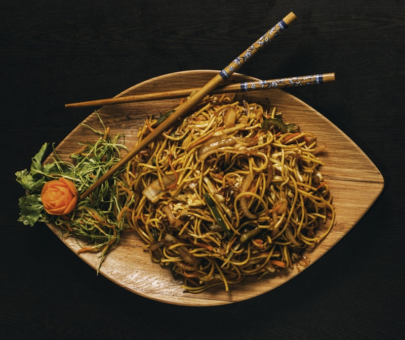

Generous Portions, Fresh Ingredients, Real Fire
At Great Wok, we take pride in authentic wok cooking done right. Every dish is prepared quickly over roaring high-output burners, searing tender meats, crisp vegetables, and savory sauces to lock in unbeatable fresh flavor and aroma.
Whether you need a swift lunch combo between meetings or an abundant family dinner for home, our kitchen prepares each order fresh from scratch with generous portions and warm hospitality.

Signature House Specials
General Tso's Chicken
$13.95Chunks of crispy breaded dark meat chicken glazed in our spicy sweet garlic ginger sauce with steamed fresh broccoli florets.
Bestseller
House Special Lo Mein
$12.95Egg noodles wok-tossed with jumbo shrimp, roast pork, tender chicken, and fresh crisp vegetables in a rich brown garlic sauce.
Wok Favorite
Honey Walnut Jumbo Shrimp
$15.50Crispy fried jumbo shrimp tossed in sweet creamy honey aioli, topped with candied walnuts and served with steamed broccoli.
Chef Feature